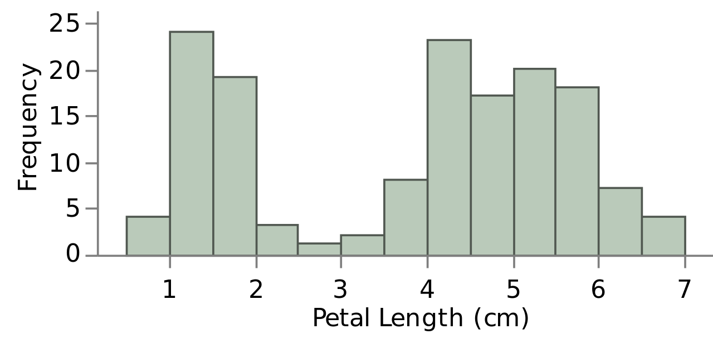
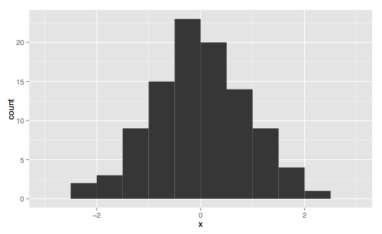
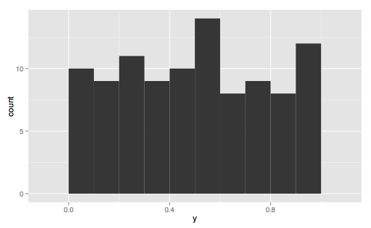
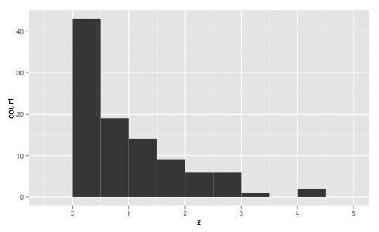
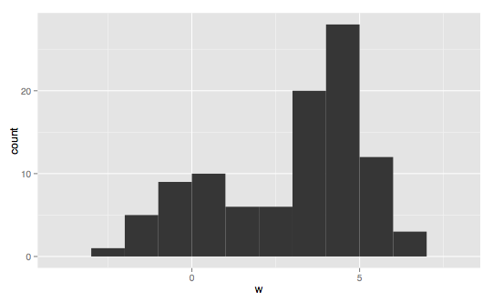
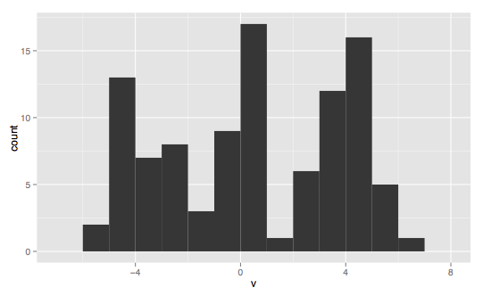

A probability distribution is a mathematical function that describes the likelihood of a specific occurrences taking place. By randomly drawing samples from a distribution, called sampling, we can expect our random selections to match the true distribution of the data as our number of samples approaches infinity (see the law of large numbers). Quite interestingly, we can also expect the averages of small numbers of samples taken many times to be normally distributed, thanks to the central limit theorem (more on this in a bit).
We can think of a probability distribution as a histogram. A histogram features an ordered list of discrete occurrences or real-valued numbers on the x-axis (called the domain) and their frequency, the number of times those occurrences are present in some experiment or observation of the data, as the y-axis (called the range). Below is a probability distribution of the flower pedal length feature from the famous Iris dataset.

source: Wikipedia (user Daggerbox)
Given a large enough sample of the data, we can use this distribution to estimate the pedal length of flowers we expect to find from real data "in the wild."

This is one of the most common distribution types, called the normal or Guassian distribution (informally the bell curve). It appears all over the place in nature. For this reason it is "often used in the natural and social sciences to represent real-valued random variables whose distributions are not known" (Wikipedia). The Gaussian distribution itself is a continuous real-valued distribution, but it can also be generalized to work with quantized or discrete data. For instance, Iris pedal length is a real value measured in centimeters, however it is perfectly reasonable to quantize the measurements to half a centimeter as in the example above.
Normal distributions can be described by two parameters, the mean (μ), which is located at the central peak, and the standard deviation (σ), which can be used to describe the variance (σ²) in the data, or how far it is spread out from the mean. A true normal distribution is symmetric around the mean with an equivalent mean, median, and mode.
The further off-centered the mean of the distribution is is called its skew. A distribution's kurtosis describes its "tailedness." The longer the tail, the higher the kurtosis. The magnitude of a distribution's skew and kurtosis can be used to describe how gaussia* a distribution is. As both of these properties approach zero, the gaussian-ness of a distribution increases.
It should be noted that there is not one normal distribution, but rather infinitely many, each with their own means and standard deviations. A normal distribution is more of an archetype, with many instances of it appearing in different shapes and sizes in the real world.
The Guassian distribution is particularly helpful because when the number of observations is particularly large, it is often the case that averages of samples of independent random variables) independently drawn from different distributions converge to a distribution that is normal, even if the original variables themselves are not normally distributed. This phenomenon is known as the central limit theorem, and it is particularly important because it "implies that probabilistic and statistical methods that work for normal distributions can be applicable to many problems involving other types of distributions." This idea is a bit unintuitive at first but it is helpful once understood as it explains why we often see normal distributions all over the place in machine learning.
If we repeatedly sum a set of samples from an unknown distribution of arbitrary non-normal shape, and plot the averages of these sums (real-value or index as domain, frequency as range) the resulting distribution will approach normal as our sample size increases. Therefore, the normal distribution is a great approximation of the mean of a lot of processes.
As the sample size from an arbitrary non-normal distribution becomes larger, the probability distribution of the means of those samples becomes more normally distributed. Taking 10,000 samples of sample size four will have a larger variance than if you were to use a sample size of 10. As sample size increases the distribution of your sampling converges at a normal distribution. This distribution is called the Sampling Distribution of the sample mean. The mean of the Sampling Distribution will be the same as the mean of the distribution being sampled.
For a wonderful demo that illustrates the central limit theorem in practice, see here (click the "begin" button on the top left side). I've also found that these two Kahn academy videos were incredibly helpful in understanding the central limit theorem.
Many probability distributions fall into a few categories of distribution types. These are not one-size-fits-all categories and not all distributions will clearly belong to these archetypes, but they can be helpful in understanding how your data is distributed.

A skewed normal distribution is a generalization of the normal distribution to non-symettric Gaussians (non-zero skewed Gaussians). Somewhat confusingly, the two skew types are described by the direction of the tail, and not the side the majority of the area of the distribution is located. This skew is said to be a positive, or right-skewed distribution.

Here we have the inverse of the skewed right normal distribution.
Bimodal distributions have two noticeable modes, or values with disproportionately-high frequencies compared to the rest of the values in the distribution. True gaussians are unimodal, as there is one mode located directly at the center. Bimodal distributions likely have an average that lies somewhere between the two modes. Technically, there will only be one actual mode (or multiple if several values have the exact same frequency), however the data in a bimodal distribution is generally concentrated in two areas.

Multimodal distributions extend the idea introduced by bimodal distributions to describe any distribution with two or more modes.

source for all histogram types: Wikipedia (user Visnit)